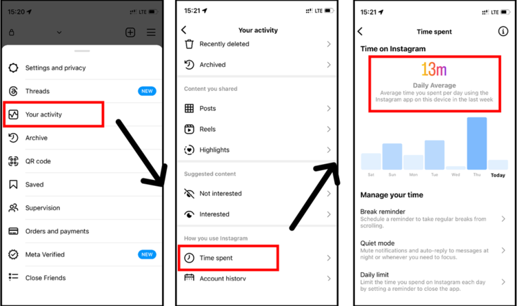

<!DOCTYPE html>
<html>
  <head>
    <title>My Experiment</title>
    <script src="jatos.js"></script>
    <script src="jspsych/dist/jspsych.js"></script>
    <script src="jspsych/dist/plugin-html-keyboard-response.js"></script>
    <script src="jspsych/dist/plugin-image-keyboard-response.js"></script>
    <script src="jspsych/dist/plugin-preload.js"></script>
    <script src="jspsych/dist/plugin-fullscreen.js"></script>
    <script src="jspsych/dist/plugin-call-function.js"></script>
    <script src="jspsych/dist/plugin-survey-html-form.js"></script>
    <script src="jspsych/dist/plugin-survey-multi-choice.js"></script>
    <script src="jspsych/dist/plugin-external-html.js"></script>

    <link href="jspsych/dist/jspsych.css" rel="stylesheet">

    <style>
      body {
          background-color: lightgray;
      }
      .trial_grid {
            display: grid;
            grid-template-columns: 10% 25% 25% 25% 10% ;
            grid-template-rows: 10% 20% 40% 10% 20%;
            column-gap: 2.5vw;
            width: 95vw;
            height: 95vh;
            }  

      .main_text {
          grid-column: 2/5;
          grid-row: 2;
          color: black;
          font-size: 1.5vw;
          align-self: flex-start;
            }
      .image_one {
          grid-column: 2 ;
          grid-row: 3;
          display: flex;
          justify-content: center;
          align-items: center;
          margin-top: 0%;
      }
      .image_two {
          grid-column: 3;
          grid-row: 3;
          display: flex;
          justify-content: center;
          align-items: center;
          margin-top: 0%;
      }
      .image_three {
          grid-column: 4;
          grid-row: 3;
          display: flex;
          justify-content: center;
          align-items: center;
          margin-top: 0%;
      }

      .image_one_instr {
          grid-column: 2 ; 
          grid-row: 3;
          display: flex;
          justify-content: center;
          align-items: end;
          margin-top: 0%;
      }
      .image_two_instr {
          grid-column: 3;
          grid-row: 3;
          display: flex;
          justify-content: center;
          align-items: end;
          margin-top: 0%;
      }
      .image_three_instr {
          grid-column: 4;
          grid-row: 3;
          display: flex;
          justify-content: center;
          align-items: end;
          margin-top: 0%;
      }

      .image_one img,
      .image_two img,
      .image_three img {
          max-width: 100%;
          max-height: 100%;
          object-fit: contain;
          margin-bottom: 0;
      }
      .image_one_instr img,
      .image_two_instr img,
      .image_three_instr img {
          max-width: 80%;
          max-height: 80%;
          object-fit: contain;
          margin-bottom: 0;
      }

      .letter_one {
          grid-column: 2;
          grid-row: 4;
          color: black;
          font-size: 1.5vw;
          font-weight: bold;
          align-self: flex-end;
            }
      .letter_two {
          grid-column: 3;
          grid-row: 4;
          color: black;
          font-size: 1.5vw;
          font-weight: bold;
          align-self: flex-end;
            }

      .letter_three {
          grid-column: 4;
          grid-row: 4;
          color: blackred;
          font-size: 1.5vw;
          font-weight: bold;
          align-self: flex-end;
            }

  </style>


  </head>
<body>


</body>
<script>


   /* initialize jsPsych */
   var jsPsych = initJsPsych({
      // on_trial_start: jatos.addAbortButton,
      on_finish: () => jatos.endStudy(jsPsych.data.get().json())
    });

  // const jsPsych = initJsPsych(override_safe_mode = true);


  /* create timeline */
  var timeline = [];

  //////////////////////////////
  /* GENERATING DESIGN MATRIX */
  //////////////////////////////

  var AT = ['stim/WF-006','stim/WF-011','stim/WF-012','stim/WF-013','stim/WF-015','stim/WF-024','stim/WF-027','stim/WF-031','stim/WF-200','stim/WF-207','stim/WF-208','stim/WF-209','stim/WF-211','stim/WF-212','stim/WF-220','stim/WF-228','stim/WF-232','stim/WF-234','stim/WF-236','stim/WF-243','stim/WF-244']  //A+T+
  var AUT = ['stim/WF-016','stim/WF-018','stim/WF-021','stim/WF-025','stim/WF-029','stim/WF-201','stim/WF-202','stim/WF-206','stim/WF-218','stim/WF-219','stim/WF-227','stim/WF-230','stim/WF-231','stim/WF-246','stim/WF-252'] //A+T-
  var UAT = ['stim/WF-005','stim/WF-007','stim/WF-008','stim/WF-014','stim/WF-020','stim/WF-023','stim/WF-030','stim/WF-033','stim/WF-035','stim/WF-038','stim/WF-039','stim/WF-214','stim/WF-235','stim/WF-247','stim/WF-251']//A-T+
  var UAUT = ['stim/WF-001','stim/WF-009','stim/WF-017','stim/WF-019','stim/WF-028','stim/WF-034','stim/WF-036','stim/WF-037','stim/WF-213','stim/WF-215','stim/WF-216','stim/WF-217','stim/WF-221','stim/WF-223','stim/WF-224','stim/WF-225','stim/WF-226','stim/WF-229','stim/WF-241','stim/WF-245','stim/WF-249']//A-T-

  // Randomize the images within categories 
  AT = jsPsych.randomization.shuffle(AT)
  AUT = jsPsych.randomization.shuffle(AUT)
  UAT = jsPsych.randomization.shuffle(UAT)
  UAUT = jsPsych.randomization.shuffle(UAUT) 


  // picking three A-T- faces that will be displayed in the instructions
  var image_instr1 = ""; UAUT.pop()
  var image_instr2 = ""; UAUT.pop()
  var image_instr3 = ""; UAUT.pop()


    // pseudo randomized order

    const permutations = [[0, 1, 2], [2, 0, 1], [1, 2, 0], [1, 0, 2], [2, 1, 0], [0, 2, 1]]
    const RepPermutations = permutations.concat(permutations, permutations)

    // console.log(RepPermutations[0])

  // Regular trials N = 15, 1 A+T+, 1 A-T+, 1 A+T-
  var triplets = []

  for (t = 0; t < 15; t++){
      var this_trip = []
      var triplets_cat = ['A+T+', 'A+T-', 'A-T+']
      this_trip.push(AT[AT.length - 1] +'.png'); AT.pop()
      this_trip.push(AUT[AUT.length - 1] +'.png'); AUT.pop()
      this_trip.push(UAT[UAT.length - 1] +'.png'); UAT.pop()
 
      index = RepPermutations[t]
      this_trip = index.map(i => this_trip[i]);
      triplets_cat = index.map(i => triplets_cat[i]);


      this_trial = this_trip.concat(triplets_cat).concat(0)

      triplets.push(this_trial)
  }


  // Catch trials N = 3, 2 A+T+, 1 A-T-

  var triplets_catch = []
  
  for (t = 0; t < 3; t++){
      var this_trip = []
      var triplets_cat = ['A+T+', 'A+T+', 'A-T-']

      this_trip.push(AT[AT.length - 1] +'.png'); AT.pop()
      this_trip.push(AT[AT.length - 1] +'.png'); AT.pop()
      this_trip.push(UAUT[UAUT.length - 1] +'.png'); UAUT.pop()

      index = RepPermutations[t+15]
      this_trip = index.map(i => this_trip[i]);
      triplets_cat = index.map(i => triplets_cat[i]);


      this_trial = this_trip.concat(triplets_cat).concat(1)

      triplets_catch.push(this_trial)
  }


  allTrials = triplets.concat(triplets_catch)


  const design_matrix1= []; 
  for (t = 0; t < 18; t++){ 
        design_matrix1.push(
    {IM_A: allTrials[t][0], IM_B: allTrials[t][1], IM_C: allTrials[t][2],
            IM_A_cat: allTrials[t][3], IM_B_cat: allTrials[t][4], IM_C_cat: allTrials[t][5],
            Catch: allTrials[t][6],Exp_part: 'Exp'
  })
 }

 function shuffleMatrix(matrix) {
    const shuffledMatrix = matrix.slice(); // Create a shallow copy of the matrix

    // Apply Fisher-Yates shuffle to shuffle the order of arrays (rows)
    for (let i = shuffledMatrix.length - 1; i > 0; i--) {
        const randomIndex = Math.floor(Math.random() * (i + 1));
        [shuffledMatrix[i], shuffledMatrix[randomIndex]] = [shuffledMatrix[randomIndex], shuffledMatrix[i]];
    }

    return shuffledMatrix;
}  

 const design_matrix = shuffleMatrix(design_matrix1);
//  console.log(design_matrix);

  var images = ['stim/WF-006.png','stim/WF-011.png','stim/WF-012.png','stim/WF-013.png','stim/WF-015.png','stim/WF-024.png','stim/WF-027.png','stim/WF-031.png','stim/WF-200.png','stim/WF-207.png','stim/WF-208.png','stim/WF-209.png','stim/WF-211.png','stim/WF-212.png','stim/WF-220.png','stim/WF-228.png','stim/WF-232.png','stim/WF-234.png','stim/WF-236.png','stim/WF-243.png','stim/WF-244.png',
  'stim/WF-016.png','stim/WF-018.png','stim/WF-021.png','stim/WF-025.png','stim/WF-029.png','stim/WF-201.png','stim/WF-202.png','stim/WF-206.png','stim/WF-218.png','stim/WF-219.png','stim/WF-227.png','stim/WF-230.png','stim/WF-231.png','stim/WF-246.png','stim/WF-252.png',
  'stim/WF-005.png','stim/WF-007.png','stim/WF-008.png','stim/WF-014.png','stim/WF-020.png','stim/WF-023.png','stim/WF-030.png','stim/WF-033.png','stim/WF-035.png','stim/WF-038.png','stim/WF-039.png','stim/WF-214.png','stim/WF-235.png','stim/WF-247.png','stim/WF-251.png',
  'stim/WF-001.png','stim/WF-009.png','stim/WF-017.png','stim/WF-019.png','stim/WF-028.png','stim/WF-034.png','stim/WF-036.png','stim/WF-037.png','stim/WF-213.png','stim/WF-215.png','stim/WF-216.png','stim/WF-217.png','stim/WF-221.png','stim/WF-223.png','stim/WF-224.png','stim/WF-225.png','stim/WF-226.png','stim/WF-229.png','stim/WF-241.png','stim/WF-245.png','stim/WF-249.png',
  'stim/TimeSpent.png']

  
    var preload = {
    type: jsPsychPreload,
    images: images
  };

  timeline.push(preload);


  /* define welcome message trial */
  var welcome = {
    type: jsPsychHtmlKeyboardResponse,
    stimulus: "Welcome to the experiment. Press any key to begin."
  };
  timeline.push(welcome);


  // display consent form
  var consent_form = {
      type: jsPsychExternalHtml,
      url: "informedConsent.htm",
      cont_btn: "start",
      check_fn: function(elem){
          if (document.getElementById('consent_checkbox').checked) {
              return true;
          }
          else {
              alert("If you wish to participate, you must check the box next to the statement 'I agree to participate in this study.'");
              return false;
          }
          return false;
      }
  };
  timeline.push(consent_form);

  /* switch to full screen */
  timeline.push({
            type: jsPsychFullscreen,
            fullscreen_mode: true,
            message: `<div class="message"><p>Please switch to full screen mode by pressing the button below!</p></div>`,
            });


    //TODO 
    /* SUBJECT DATA - TEMP */

    var info1 = {
  		type: jsPsychSurveyHtmlForm,
		html: '<p>What is your prolificID?</p><p><input name="prolificID" id="prolificID" minlength="2"/></p>'+
			  '<p>How old are you?</p><p><input name="age" type="number" id="age" required min="18"/></p>' ,
        data: {task: 'demo1'}}
 
	timeline.push(info1)

	var info2 = {
  		type: jsPsychSurveyMultiChoice,
		questions: [
		{ prompt: "What is your gender?", 
			options: ["Female", "Male", "Other", "I prefer not to answer"], 
			required: true,
			horizontal: true,
			name: 'gender'
		}, 
		{ prompt: "Are you right or left-handed?", 
			options: ["Right-handed", "Left-handed"], 
			required: true,
			horizontal: true,
			name: 'handedness'
		}],
        data: {task: 'demo2'}}
	timeline.push(info2)


  var cursor_off = {
  type: jsPsychCallFunction,
  func: function() {
      document.body.style.cursor= "none";
    }
  }
  timeline.push(cursor_off);


    /* define instructions trial */
    var instructions = {
    type: jsPsychHtmlKeyboardResponse,
    stimulus: function(){

        var html = `
          <div class="trial_grid">
              <div class="main_text">
                <div/p>In this experiment, you will see three faces like in the example below. You have the possibility to hang out only with two of these people. 
                Therefore, you have to choose the person to exclude. There is no correct or wrong answer, you should respond just following your instinct while looking at the faces.</p>
                  <p>Press 'A' if you want to exclude the first person, press 'S' if you want to exclude the second person, press 'D' if you want to exclude the third person. </p>
                  <p>You have a maximum of 10 seconds to make your choice. </p>
              </div>
              <p>Press the spacebar to begin.</p>
              </div>

              <div class="image_one_instr">${image_instr1}</div>
              <div class="image_two_instr">${image_instr2}</div>
              <div class="image_three_instr">${image_instr3}</div>
              <div class="letter_one">A</div>
              <div class="letter_two">S</div>
              <div class="letter_three">D</div>
          </div>`;
          return html;
        },
    choices: [' '],

    post_trial_gap: 2000
  };
  timeline.push(instructions);


  /* define fixation and test trials */
  var fixation = {
    type: jsPsychHtmlKeyboardResponse,
    stimulus: '<div style="font-size:60px;">+</div>',
    choices: "NO_KEYS",
    trial_duration: 500,
    data: {
      task: 'fixation'
    }
  };

  var test = {
    type: jsPsychHtmlKeyboardResponse,

    stimulus: function(){

    var IM_A = "";
    var IM_B = "";
    var IM_C = "";

    var html = `
      <div class="trial_grid">
          <div class="main_text">
            <p>Who do you want to exclude?</p>
              </div>
          <div class="image_one">${IM_A}</div>
          <div class="image_two">${IM_B}</div>
          <div class="image_three">${IM_C}</div>
          <div class="letter_one">A</div>
          <div class="letter_two">S</div>
          <div class="letter_three">D</div>
      </div>`;
      return html;
    },
    trial_duration: 10000,
    choices: ['a', 's', 'd'],

    on_finish: function(data){
      Object.assign(data, jsPsych.getAllTimelineVariables())
      data.task = 'choice'
    }
  };

  // feedback in case of no response
	var late = {
		type: jsPsychHtmlKeyboardResponse,
		stimulus: function() {
                var html = `<div/p>Respond within 10 seconds!</p>
                            </div>
                            <p>Press the spacebar to continue.</p>
                            </div>`;
                            return html},      
    choices: [' '],
		on_finish: function(data){			
			data.task = "feedback";
					}			
				}

  // conditional function
  var check_response = {
    timeline: [late],
    conditional_function: function() {
        var last_response = jsPsych.data.getLastTrialData().values()[0].response
        console.log(last_response)
        if(last_response ==  null){
          console.log('display feedback')
          return true}
        else{
          console.log('do not display feedback')
          return false}
        },
    }


  /* define test procedure */
  var test_procedure = {
    timeline: [fixation, test, check_response],
    timeline_variables: design_matrix,
    repetitions: 1,
    randomize_order: true
  };
  timeline.push(test_procedure);

  /* Final instagram questionnaire */

  var cursor_on = {
  type: jsPsychCallFunction,
  func: function() {
      document.body.style.cursor= "auto";
    }
  }
  timeline.push(cursor_on);

  var insta1 = {
  		type: jsPsychSurveyHtmlForm,
      preamble: `<div p>Thank you!</p><p></p>
    <p>Now we will ask you to answer three questions about your use of Instagram.</p>
    <p>Please answer as accurately as possible.</p></div>`,
		html: '<p>How many followers do you have?</p><p><input name="followers" type="number" id="followers"></p>'+
			    '<p>How many accounts do you follow?</p><p><input name="followed" type="number" id="followed"></p>' ,
        data: {task: 'insta1'}}
 
	timeline.push(insta1)

  var insta2 = {
  		type: jsPsychSurveyHtmlForm,
      preamble: `<div p>The last question is about how much time you spend daily on Instagram.</p>
    <p>You can find this information in your account settings, going to:</p>
    <p>Settings --> Your Activity --> Time Spent</p>
    <p>As in the example below.</p>

    <p>If you cannot retrieve this information, please provide an estimate.</p></div>`,
		html: ""+
    '<p>How many hours?</p><p><input name="hours" type="number" id="hours"></p>'+
    '<p>How many minutes?</p><p><input name="minutes" type="number" id="minutes"></p>',
        data: {task: 'insta2'}}
  
	timeline.push(insta2)


  /* define goodbye */
  var bye = {
    type: jsPsychHtmlKeyboardResponse,
    stimulus: `<div p>The experiment is finished.</p>
    <p>Thank you!</p>
    <p>Press any key to exit.</p></div>`
  };
  timeline.push(bye);

  timeline.push({
		type: jsPsychFullscreen,
		fullscreen_mode: false
	});

  /* start the experiment */
  jatos.onLoad(() => {
    jsPsych.run(timeline);
  });

  </script>
</html>